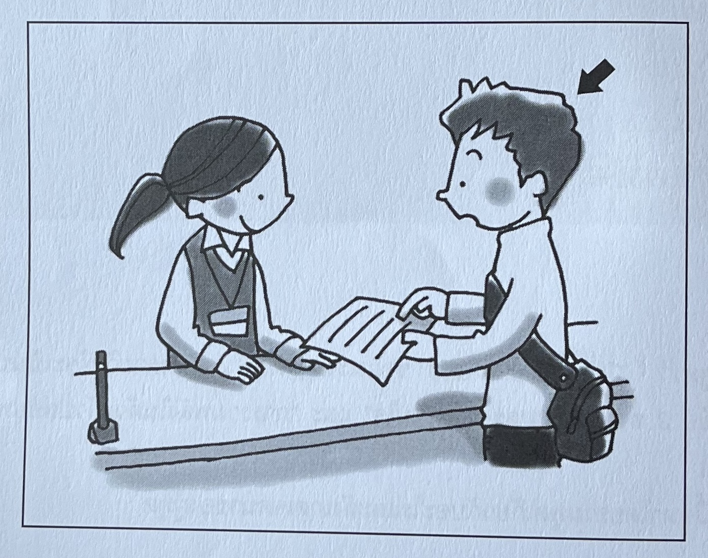

日本語のクラスで女の先生が発表の準備について話しています。
女：先週お話ししたように、あさっての授業では発表をしてもらいますから、準備しておいてください。
男：発表の時パソコンを使ってもいいですか。写真を見せたいんですけど。
女：いいですけど、リーさんはまだ原稿ができていないでしょう？ 写真だけでは発表になりませんよ。すぐにやって、見せてください。
男：はい。書き直すのはまとめのところだけでいいですか。
女：ええ、そこがちょっとわかりにくいので、もう少し直さないと。ほかの準備は原稿が完成してからでいいです。それから、あしたはグループで発表の練習をするので、漢字の読み方も確認してきてくださいね。
女の人と男の人が話しています。
女：渡辺君、あしたの飲み会、行く？
男：あー、行こうと思っていたんだけど……。
女：あ、アルバイトの日か。
男：それは前から休みもらってたからいいんだけど。あしたはさ、姉の子供を預かってほしいって頼まれちゃってね。友達の結婚式に行くからって。
女：お兄さんはいないの？
男：うん、いつもなら週末は休みなんだけど……。子供が1人じゃかわいそうだよね。
女：ふうん。大変そうだけど、頑張ってね。
テレビで女の人が話しています。
女：試験の時などに、緊張してしまって困ったことはありませんか。そんな時に役立つ、いくつかのやり方をご紹介しましょう。ある人は、緊張しているときに「お父さん、ありがとう。お母さん、ありがとう」とほかの人への感謝を心の中で言うと、落ち着けるそうです。また、体に一度ぐっと力を入れて、その後力を抜くと、落ち着けるという人もいます。一度試してみてはいかがですか。

大学で事務の人に書類の書き方を聞きます。何と言いますか。
1 男：あの、この書類の書き方、教えてもよろしいでしょうか。
2 あの、この書類の書き方、教えていただきたいんですけど。
3 あの、この書類の書き方、教えていただきましょうか。
女：座ってもかまいませんか。
男：
1 いえ、おかげさまで。
2 はい、失礼します。
3 ええ、おかけください。
女：今日、なんで遅れたの？
男：
1 今日は自転車だよ。
2 電車が止まってて。
3 ポストに入れたよ。
例）元気（a 電気 b 元気 c 元気）
(1) 音（a 音 b 夫 c 元）
(2) 時計（a 続計 b 時計 c 鮮）
(3) 以内（a 以来 b 以内 c 以外）
(4) 数（a 勝つ b 数 c ガス）
(5) 作家（a 雑貨 b 坂 c 作家）
(6) 銀色（a 金色 b 黄色 c 銀色）
(7) パンダ（a バター b パンダ c 肌）
(8) カード（a 角 b カット c カード）
(9) 将来（a 将来 b 町内 c 場内）
(10) 知っている（a している b 敷いている c 知っている）
例）これから美容院へ行きます。（a）
(1) すみません、コピー、お願いします。（b）
(2) 最近、田中さんに会いました。（b）
(3) これは今でないとできません。（a）
(4) あればいいと思います。（a）
(5) 早く変えたほうがいいですよ。（b）
(6) この服、ちょうどいいですね。（b）
(7) この映画はもう一度見た。（a）
(8) ねえ、これは買ったの？（a）
(9) みんな来るまで待ちましょう。（b）
(10) あともう少し、できますよ。（a）
例）
(2)
(3)
(4)
(5)
(6)
(7)
(8)
(9)
(10)
例）この本、読んでる？（b 読んでいる）
(1) 今日は行かなくちゃ。（a 行かなくてはならない）
(2) 昼ご飯、食べてくね。（a 食べていく）
(3) 水、持ってった？（a 持っていった）
(4) 切符、なくしちゃったよ。（b なくしてしまった）
(5) かばん、持つって言ったんだよ。（b 持つと言った）
例）カメラ、持ってるよ。（持っている）
(1) あ、そろそろ帰らなきゃ。（帰らなければ）
(2) うち、寄ってく？（寄っていく）
(3) ここに捨てちゃだめだよ。（捨てては）
(4) 先生の話、ちゃんと聞いてた？（聞いていた）
(5) 先に食べちゃうね。（食べてしまう）
(6) 店、もう開いてるよ。（開いている）
(7) 飲み物、買ってかない？（買っていかない）
(8) さっきそっちに入れといたんだけど。（そちらに入れておいた）
(9) DVDなら、田中さんが持ってったよ。（持っていった）
(10) ずっと同じのばっかり見てるね。（ばかり見ている）
解答解説はありません。
答え：(1)× (2)－ (3)× (4)－ (5)× (6)× (7)－ (8)－ (9)× (10)×
(1)
(2)
(3)
(4)
(5)
(6)
(7)
(8)
(9)
(10)
(1) 漢字の読み方を友達に教えてもらいたいです。（友達）
(2) 友達のうちのトイレを使いたいです。（話す人）
(3) 食堂で隣の席の人にしょうゆを取ってほしいです。（隣の席の人）
(4) 商品の説明がわからなかったので、店の人にもう一度説明してもらいたいです。（店の人）
(5) きれいな着物を着ている人の写真を撮りたいです。（話す人）
(6) 机を動かすので、近くの人に手伝ってほしいです。（近くの人）
(7) 図書館で日本の歴史について調べたいです。（話す人）
(1) 友達の隣の席に荷物を置きたいです。何と言いますか。
(2) 先輩にレポートを見てもらいたいです。何と言いますか。
(3) コンビニで英語の新聞を買いたいです。店員に何と言いますか。
(4) 駅までの道がわかりません。何と言いますか。
(5) 病院に一緒に行ってほしいので、友達に頼みます。何と言いますか。
(6) 一人では全部できません。友達に何と言いますか。
(7) 相手の名前の漢字が読めません。何と言いますか。
(8) 会社の車を使いたいです。何と言いますか。
(1) 友達のメールアドレスを知りたいです。何と言いますか。
(2) 会議室のかぎを使いたいです。受付の人に何と言いますか。
(3) 店でケースに入った時計を近くで見たいです。店員に何と言いますか。
(4) 留守の間、猫の世話を友達に頼みます。何と言いますか。
(5) 店で商品のパンフレットがほしいです。何と言いますか。
(6) 友達の辞書を使いたいです。何と言いますか。
(7) わからないところを先生に質問します。何と言いますか。
(8) 大学で隣の席の人に教科書を見せてもらいます。何と言いますか。
(1) 教室の窓が開きません。何と言いますか。
(2) 会社でほかの人がたくさん荷物を持っています。何と言いますか。
(3) 友達のシャツがソースで汚れています。何と言いますか。
(4) レストランで自分のスプーンが落ちました。店の人に何と言いますか。
(5) 会社でほかの人の仕事を手伝います。何と言いますか。
(6) 電車の中にかばんを忘れました。駅員に何と言いますか。
(7) 今日は図書館は休みです。図書館に行こうとしている友達に何と言いますか。
(8) 前を歩いている人の手袋を拾いました。何と言いますか。
(1) 会社で先輩より先に帰ります。何と言いますか。
(2) 会社で部長に話したいことがあります。何と言いますか。
(3) 風邪を引いた人が早く帰ります。その人に何と言いますか。
(4) 先生に久しぶりに会いました。何と言いますか。
(5) お客さんに席を勧めます。何と言いますか。
(6) 先生に今から話せるかどうか聞きます。何と言いますか。
(7) 社長室に入ります。何と言いますか。
(8) 会社の人があしたから出張に行きます。何と言いますか。
答え：(1)2 (2)3
(1) 先生に推薦状を書いてもらいたいです。何と言いますか。
(2) 友達がかさがなくて困っているようです。何と言いますか。
例）
(1)
(2)
(3)
(4)
(5)
(6)
(7)
(8)
(9)
(10)
例）
(1)
(2)
(3)
(4)
(5)
(6)
(7)
(8)
(1)
(2)
(3)
(4)
(5)
(6)
(7)
(8)
(9)
(10)
(1)
(2)
(3)
(4)
(5)
(1)
(2)
(3)
(4)
(5)
(6)
(7)
(8)
(9)
(10)
答え：(1)2 (2)1 (3)1
(1) 男：ちょっと手伝ってほしいんだけど。
(2) 女：子供が熱が出しちゃって……。
(3) 女：来週の試験に出るところ、教えていただけませんか。
答え：(1)入れない (2)並べる (3)片付けない (4)連絡する (5)持っていかない
(1)
(2)
(3)
(4)
(5)
答え：(1)洗う (2)あげない (3)運ばない (4)誘う (5)つけない
(1)
(2)
(3)
(4)
(5)
(1) 答え：3
女の人と男の人が家で旅行の準備をしています。女の人はこの後何をかばんに入れますか。
(2) 答え：4
男の学生と先生が発表の準備をしています。男の学生はどのように机を並べますか。
(3) 答え：1
男の人と女の人がバーベキューの準備について話しています。男の人は何を準備しますか。
(4) 答え：1
先生が学生にあしたの工場見学について話しています。学生はあした、何を持っていかなければなりませんか。
(5) 答え：2
温泉の受付で男の人が係の人と話しています。男の人は受付でいくら払いますか。
(1) 答え：2
男の人と女の人がパーティーの後で話しています。男の人はこの後まず何をしますか。
(2) 答え：3
会社で男の人と女の人が話しています。女の人はこの後すぐ何をしますか。
(3) 答え：2
女の人がカードの作り方について説明しています。このグループの人たちは、これからまず何をしますか。
(4) 答え：2
うちで夫と妻が話しています。夫はこれからまず何をしますか。
(5) 答え：2
学校で先生が話しています。女の学生はまず何をしなければなりませんか。
(1) 答え：2
会社で女の人と男の人が地震が起きたときのための準備について話しています。女の人はこの後何を注文しますか。
(2) 答え：1
男の人と女の人が市民会館で絵本の勉強会の準備をしています。女の人はこれから何をしますか。
(3) 答え：1
女の人が講師に説明しています。講師は部屋に来て最初に何をしなければなりませんか。